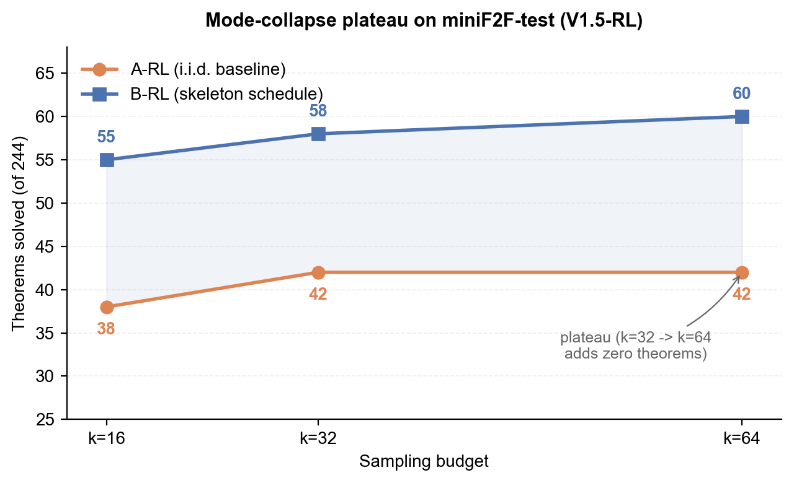
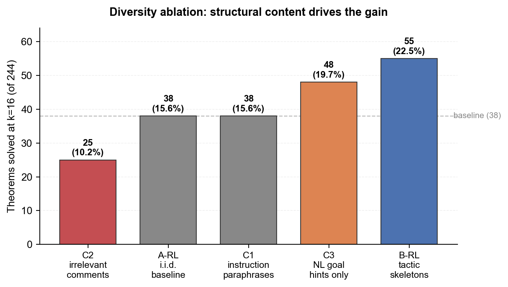

Inference-Time Diversity in RL-Trained Lean Theorem Provers
A Diagnostic Study
MIT ’26
ICML 2026 · AI for Math Workshop
RL-trained Lean theorem provers run out of ideas as you sample more. A fixed schedule of 15 tactic skeletons closes the gap, and the effect is RL-specific.
Summary
RL-trained Lean theorem provers hit a sampling ceiling. On miniF2F-test, doubling DeepSeek-Prover-V1.5-RL’s i.i.d. sampling budget from k=32 to k=64 adds zero new solved theorems: both budgets land at 42/244. A fixed schedule of 15 common tactic openings (simp, intro, constructor, …) breaks the plateau, with a mean gain of +12.3 ± 4.2 theorems across n=3 seeds (sign positive in every seed). A controlled diversity ablation pins the gain to structural guidance, not prompt diversity: paraphrased instructions match the baseline, irrelevant Lean comments actively degrade it. The phenomenon is RL-specific. The same model’s non-RL base checkpoint proves zero theorems with or without skeletons, so RL is the locus of both the proof capability and the inference-time collapse that limits it.
Results

Scaling on miniF2F-test (244 theorems) with DeepSeek-Prover-V1.5-RL:
| Condition | k=16 | k=32 | k=64 |
|---|---|---|---|
| A-RL (i.i.d. baseline) | 38/244 (15.6%) | 42/244 (17.2%) | 42/244 (17.2%) |
| B-RL (skeleton schedule) | 55/244 (22.5%) | 58/244 (23.8%) | 60/244 (24.6%) |
| Absolute gap | +17 | +16 | +18 |
| Relative gain | +44.7% | +38.1% | +42.9% |
Paper Table 1 (single-seed headline numbers). The abstract reports the across-seed mean Δ = +12.3 ± 4.2 theorems at k=16, n=3 seeds, sign preserved in every seed.

Diversity ablation at k=16 isolates structural content from prompt diversity:
| Condition | Solved | Pass@16 |
|---|---|---|
| C2 (irrelevant Lean comments) | 25/244 | 10.2% |
| A-RL (i.i.d. baseline) | 38/244 | 15.6% |
| C1 (instruction paraphrases) | 38/244 | 15.6% |
| C3 (natural-language goal hints only) | 48/244 | 19.7% |
| B-RL (tactic skeletons) | 55/244 | 22.5% |
Clean structural-content gradient: C2 < A-RL = C1 < C3 < B-RL. Irrelevant tokens hurt; pure paraphrase ties the baseline; NL hints alone recover roughly 58% of the A→B gap; tactic stems contribute the orthogonal remainder.
- The phenomenon is RL-specific. The non-RL base checkpoint (V1.5-Base) proves 0/244 theorems at every k, with or without skeletons. RL creates both the proof capability and the inference-time collapse that limits it.
- Distributional evidence. Across 13,159 stochastic samples, the median V1.5-RL theorem receives only 2 distinct first-tactic heads; 49% of the benchmark gets a deterministic single strategic opening.
- Cross-model contrast. RL-trained DeepSeek-Prover-V2-7B contributes +3 frontier theorems no i.i.d. baseline of any tested model reaches, despite a flat aggregate. SFT-trained Goedel-Prover loses −10.0 ± 4.4 theorems across n=3 seeds (sign negative every seed). The A→B intervention helps an RL prover and hurts an SFT prover.
Reproduce
Setup (Python 3.10 + Lean 4.9.0-rc1, the toolchain V1.5 was trained on):
# 1. Python environment
python3.10 -m venv .venv
source .venv/bin/activate
pip install -r requirements.txt
# 2. Lean toolchain
curl -sSf https://raw.githubusercontent.com/leanprover/elan/master/elan-init.sh | sh -s -- -y
export PATH="$HOME/.elan/bin:$PATH"
(cd lean && lake update && lake exe cache get && lake build)
# 3. Start a local vLLM server (one A100 80GB for V1.5)
python -m vllm.entrypoints.openai.api_server \
--model deepseek-ai/DeepSeek-Prover-V1.5-RL \
--tensor-parallel-size 1 --max-model-len 2048 \
--gpu-memory-utilization 0.9 --enforce-eager --trust-remote-codeRun the main experiments:
# Exp 1 + Exp 3 (V1.5-RL): A-RL, B-RL at k in {16, 32, 64} + C1/C2 ablations
bash scripts/run_exp1_exp3_rl.sh --provider openai_compat
# Exp 2 (V1.5-Base): A-BASE, B-BASE at k in {16, 32, 64}
bash scripts/run_exp2_base.sh --provider openai_compat
# Cross-model: V2-7B + Kimina-Prover at k in {16, 32}, max-tokens 8192
bash scripts/run_new_models.sh
The pod-bootstrap script scripts/setup_prime_pod.sh does Python + Lean + Mathlib cache + model weights end-to-end on a fresh Prime Intellect / RunPod A100 instance. Each run writes append-only events.jsonl plus per-attempt JSON and Lean files under outputs/<exp_hash>/; exp_hash is a deterministic function of the run config, so reruns are idempotent.
Citation
@inproceedings{burton2026inference,
title = {Inference-Time Diversity in RL-Trained Lean Theorem Provers: A Diagnostic Study},
author = {Burton, Zachary},
booktitle = {ICML 2026 AI for Math Workshop},
year = {2026},
eprint = {2601.16172},
archivePrefix = {arXiv},
primaryClass = {cs.AI},
url = {https://arxiv.org/abs/2601.16172}
}